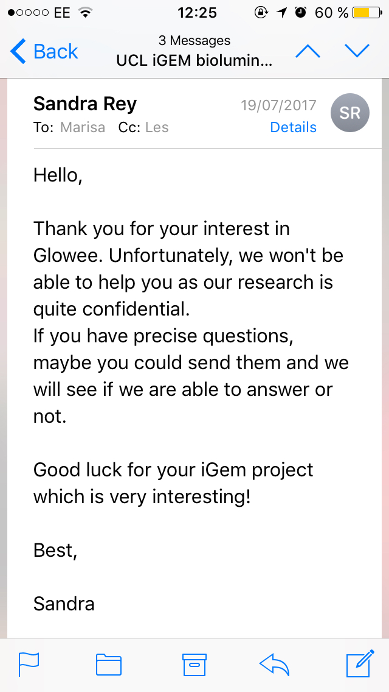

In the early research stages of LIT, we found that many fields have been taking interest in bioluminescent bacteria: the start-up scene (Glowee), academics (Researcher Name) and designers, such as Teresa van Dongen.
After Glowee decided that they’re too cool for school, we reached to Teresa, a Dutch artist, who designed and produced a bioluminescent light-bulb with bacteria.
Our intention was to learn about her experience with bioluminescent bacteria and more importantly, about the human-centered aspects of such a product: aesthetics, use and safety.
We talked about the engineering aspects that she experimented with and started a conversation about what potential light-induced technologies have for the future of design and bioluminescence.
Creating kits, giving people the possibility to build their own bacterial powered light-bulb, would make this new concept more exciting and push more people to want to learn about the science behind bioluminescent organisms.
We strongly felt that the initial engagement, the very first step of science communication, needs more exploration in the iGEM community. To test our assumption, we gamified the central dogma of molecular biology and observed what people thought of the idea.
The result? A game installation at London Science Museum’s Late event, attended by more than 5000 people. See here what gamifying molecular biology looks like, public perception and feedback.
Instagram. Instagram. Instagram. Instagram. Instagram. Instagram. Instagram. Instagram. Instagram. Instagram. Instagram. Instagram. Instagram.
Instagram. Instagram. Instagram. Instagram. Instagram. Instagram. Instagram. Instagram. Instagram. Instagram. Instagram. Instagram. Instagram.